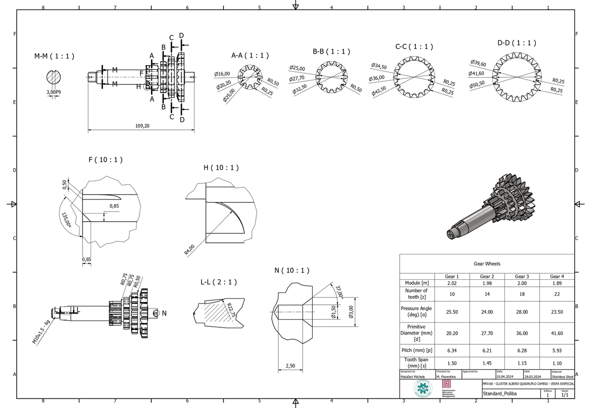
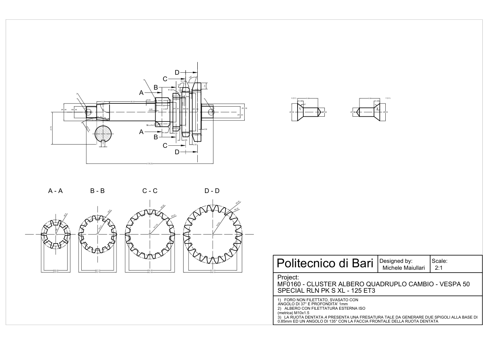

Technical Representation of Machines & Virtual Prototyping — Politecnico di Bari · A.Y. 2023–2024
Reverse Engineering: 4-Speed Vespa Gearbox Shaft
Complete reverse engineering of the MF0160 cluster gearbox shaft of the Vespa 50 Special: from the physical legacy part to a parametric Autodesk Inventor digital twin and a production-ready A2 manufacturing drawing package drafted in AutoCAD.
Complete evidence: github.com/michelemaiullari/vespa-mf0160 · 3D model & 2D drawing package
Overview
The starting point was a physical, finished component with no CAD data, no drawings and no technical documentation: the MF0160 cluster shaft (albero quadruplo), the four-speed gearbox cluster shaft of the Vespa 50 Special — a design shared across the RLN, PK, S, XL and 125 ET3 gearbox families. As the project of the Technical Representation of Machines & Virtual Prototyping course at Politecnico di Bari, the task was to run the complete reverse-engineering loop on it: measure the part, reconstruct a parametric 3D geometry, and deliver the full technical documentation needed to manufacture it again.
The result is a complete digital twin — a fully parametric Autodesk Inventor part and an AutoCAD manufacturing drawing — closing the gap between a legacy physical component and a modern CAD environment.
The Part
The component is a stepped shaft with four integral spur gears (10, 14, 18 and 22 teeth), an overall length of 109.20 mm and diameters ranging from Ø10.00 mm at the threaded end to Ø50.50 mm on the largest gear rim. The feature inventory is anything but trivial: an ISO metric external thread M10×1.5 – 6g at the output end, a 3.00 P9 keyway, cross-holes with 37° countersinks (Ø1.50 / Ø3.00), radii from R0.25 up to R22.75 on the web transitions, angular features (85°, 103°, 109°) and a dedicated undercut geometry on the gear rims — two 0.85 mm edges at 135° with the gear front face, produced by the original milling.
Each of these features had to be measured, identified and re-documented from scratch, because nothing about the part was known a priori.
Measurement Campaign
The physical part was measured feature by feature with a digital caliper and a micrometer: stepped diameters, axial locations of every seat and shoulder, radii, chamfers and the keyway width. The thread was identified by direct comparison of pitch and crest diameter, returning an ISO metric M10×1.5; the countersunk cross-holes were characterised through their entry cones (37°, Ø1.50 to Ø3.00, depth per drawing note). Larger angular and curved features (85° cone, 103°/109° profiles, R22.75 web) were reconstructed from chord and height measurements across the feature.
Every value was recorded on a structured measurement sheet that mirrored the drawing layout, so that each dimension in the final documentation is traceable back to a physical measurement — reference dimensions included and marked as such, e.g. the (109.20) overall length.
Gear Reverse Engineering
The four integral gears were reverse-engineered individually: teeth counted, tip and primitive diameters measured, and the module back-calculated for each wheel, then verified through the circular pitch (p = π·m). The measured pressure angle differs from wheel to wheel, as does the module — a hallmark of legacy, cost-driven gearing that had to be captured per-gear rather than assumed uniform across the cluster.
- Gear 1 — z = 10 · m = 2.02 · α = 25.50° · d = 20.20 mm · p = 6.34 mm · s = 1.50 mm
- Gear 2 — z = 14 · m = 1.98 · α = 24.00° · d = 27.70 mm · p = 6.21 mm · s = 1.45 mm
- Gear 3 — z = 18 · m = 2.00 · α = 28.00° · d = 36.00 mm · p = 6.28 mm · s = 1.15 mm
- Gear 4 — z = 22 · m = 1.89 · α = 23.50° · d = 41.60 mm · p = 5.93 mm · s = 1.10 mm
This data set — collected in the gear table on the drawing — is what makes a future replacement or gear-pair matching possible without any OEM documentation.
3D Reconstruction
The digital twin was built as a fully parametric part in Autodesk Inventor (.ipt), with a sketch-driven feature tree following the manufacturing logic of the component: the stepped shaft profile revolved around the axis, the keyway, the cross-holes with their countersinks, the M10×1.5 thread, and the four gear rims modelled from the reconstructed tooth data (z, m, α) with the measured root radii and the 0.85 mm / 135° undercut captured in the profiles.
Because the model is parametric, every dimension is driven by an editable sketch value — the model can be adapted, verified or re-used, not just visualised. The 3D isometric view embedded in the AutoCAD sheet is rendered directly from the Inventor model, keeping documentation and geometry in sync.
2D Manufacturing Drawing Package
The documentation deliverable is a complete A2 manufacturing drawing, drafted in AutoCAD, on the Politecnico di Bari standard title block (Standard_Poliba), designed on 28.03.2024 and checked on 10.04.2024. The sheet contains the main longitudinal view; four full sections A–A, B–B, C–C, D–D (1:1) through each gear; the M–M (1:1) section with the 3.00 P9 keyway; and high-magnification details for the micro-features: F (10:1) for the gear undercut, H (10:1) for the R4.00 root geometry, L–L (2:1) for the R22.75 web transition and N (10:1) for the 37° countersink — the quoted measurement sketch adds X and Y details at 5:1 for the same holes.
Annotations cover the M10×1.5 – 6g thread, the P9 keyway tolerance, the radius chain (R0.25–R0.75), the countersink note, the gear undercut note (two 0.85 mm edges at 135° with the front face), and the material specification (stainless steel). The gear data table is embedded in the sheet next to the title block.
Results
- Delivered a complete, parametric digital twin (Autodesk Inventor .ipt) with a fully annotated AutoCAD drawing package (DWG) for a legacy component that had zero digital footprint.
- Delivered a production-ready A2 drawing package: four sections, six detail views up to 10:1, material specification, fit tolerances and drawing notes.
- Reverse-engineered the full gearing data set (z, m, α, d, p, s for all four wheels), enabling future repair, replacement or gear matching without OEM documentation.
- Kept every dimension in the documentation traceable to a physical measurement, with reference dimensions explicitly marked.
- Closed the loop from physical metrology to parametric CAD to standards-based technical drawing, within a single course project.
Skills
Gallery

